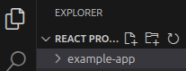
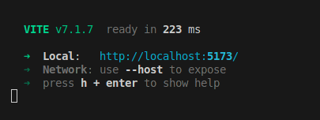
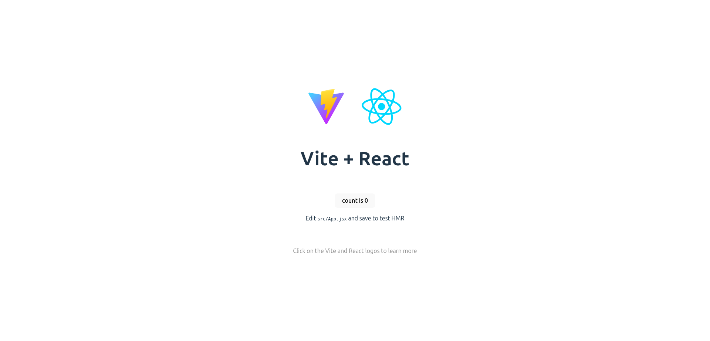
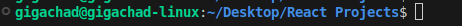
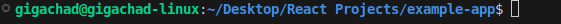
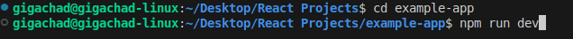
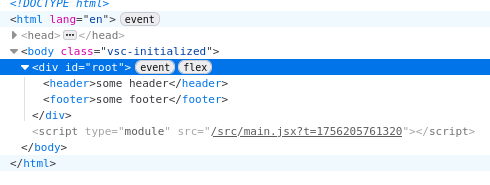

Before you start
What you need
Use this guide whenever you need a fresh React project: create it with Vite, run it locally, then replace the starter page with a header, main content and footer.
- Visual Studio Code and a web browser.
- Node.js and npm. Install a supported LTS release from Node.js if needed. npm comes with Node.js.
- An internet connection to download the project tools and packages.
In a terminal, check that both commands print a version number:
node --version
npm --versionIf either command is not recognised, install Node.js and reopen VS Code. If Vite reports an unsupported Node version, update Node.js to a supported LTS release.
Step 1
Open your projects folder
- Create a folder for your projects, such as React Projects.
- In VS Code, choose File → Open Folder and select it.
- Choose Terminal → New Terminal. The terminal should start inside the folder you opened.
This is your parent folder. Vite will create a separate project folder inside it.
Step 2
Create a React project
Run this command in the terminal. my-app is the name of the new project folder; you can choose a different name.
npm create vite@latest my-app- If npm asks to install
create-vite, confirm to continue. - Use the arrow keys and Enter to select React as the framework.
- Select JavaScript as the variant/template.
- If asked to install with npm and start now, you can accept. Otherwise, use the commands in the next step.
Prompt wording can vary between Vite versions.


example-app; the commands in this guide use my-app.Step 3
Install packages and start the server
If the setup has already started a server and shows a Local address, go to Step 4. Otherwise, run these commands one at a time from the parent folder:
cd my-app
npm install
npm run devcd my-appmoves into your project. Skip it if the terminal is already there.npm installdownloads the project dependencies. You normally need it on first setup, not every restart.npm run devstarts Vite’s development server.


Step 4
Open the website
Hold Ctrl and click the terminal’s Local link, or copy the address into your browser. It is usually http://localhost:5173/; use the address the terminal actually shows if the port is different.


localhost means this computer. The site is running locally for development.
Returning to your project
Restart from the correct folder
To stop the server, focus its terminal and press Ctrl + C. To start again later, first check the terminal path: it must be the project folder containing package.json.


npm run dev: the terminal is still in the parent folder.

From the parent folder, run:
cd my-app
npm run devAlternatively, use File → Open Folder to open my-app directly in VS Code, then open a new terminal and run just npm run dev.


example-app. Substitute your own project folder name.You do not need to create the project again. Open the existing folder and restart its server.
Step 5
Find the files you will edit
Expand the project folder in VS Code’s Explorer, then open src.
src/App.jsx- The main React component you will edit for this starter page.
src/App.css- Styles imported by
App.jsx. src/index.css- Global styles, including the page layout and margin reset.
index.html(in the project folder)- The HTML entry page. You can update the tab title and other metadata in its
<head>.
Match the filenames exactly: App.jsx and App.css begin with a capital A; index.css uses lowercase.
Step 6
Replace the starter component
Replace all the contents of src/App.jsx with this JSX, then save:
import './App.css'
function App() {
return (
<>
<header>
some header
</header>
<main id="main-content">
main content here
</main>
<footer>
some footer
</footer>
</>
)
}
export default AppJSX lets you write HTML-like markup inside JavaScript. App returns the page content. The <>...</> wrapper is a fragment: it groups the header, main and footer without adding another HTML element.
Keep import './App.css' and export default App. The import connects the stylesheet; the export makes the component available to the app’s entry code.
Step 7
Reset the CSS and set up the layout
- Open
src/App.css, delete its starter styles and save the empty file. Keep the file itself. - Replace all the contents of
src/index.csswith the following CSS, then save.
:root {
font-family: system-ui, Avenir, Helvetica, Arial, sans-serif;
line-height: 1.5;
font-weight: 400;
/* Keep the template's font rendering settings. */
font-synthesis: none;
text-rendering: optimizeLegibility;
-webkit-font-smoothing: antialiased;
-moz-osx-font-smoothing: grayscale;
}
/* Remove default margins and include padding/borders in sizes. */
*, *::before, *::after {
margin: 0;
box-sizing: border-box;
}
/* Make the app at least as tall as the viewport. */
#root {
display: flex;
flex-direction: column;
min-height: 100vh;
width: 100%;
}
/* Let the main content grow to push the footer down. */
#main-content {
flex: 1;
}The default colours and starter layout have been removed. This is a simple starting point for a page with a header, content in the middle and a footer.
Understand the setup
Why the footer stays at the bottom
Remove default margins
* selects every element. *::before and *::after include their generated pseudo-elements. margin: 0 removes the browser’s default margins, so you can add spacing deliberately to match your design. box-sizing: border-box includes padding and borders within an element’s declared size.
Make the app fill the page
:root selects the document’s root element (normally <html>); #root selects the element with id="root", where React renders the app. They are different selectors.


#root. This screenshot highlights the container; your completed example also includes main between the header and footer.display: flex and flex-direction: column stack the root’s children vertically. min-height: 100vh makes it at least as tall as the viewport, while still allowing a longer page to grow.
Let the main content take the spare space
#main-content { flex: 1; } lets the main area grow into the remaining vertical space, pushing the footer to the bottom on a short page. The fragment adds no wrapper, so header, main and footer are direct children of #root.
This is not a fixed footer: on a longer page it follows the content. More complex designs may need a different layout.
Final check
Save, check and keep building
- Keep the development server running and save all three edited files.
- Look at the browser: you should see “some header”, “main content here” and “some footer”, with the starter logos and counter removed.
- On a short page, check that the footer sits at the bottom. Change the text in
App.jsx, save, and check that the browser updates.
Common setup problems
- npm cannot find
package.json - Check the terminal path. Move into the project folder before running
npm installornpm run dev. - The browser cannot connect
- Make sure the server is still running. Use the Local address printed by Vite, including its port number.
- The old layout or colours remain
- Clear
App.css, replaceindex.csscompletely and save both files. - The page is blank or shows an error
- Check the terminal and browser error message. Confirm the filename, JSX closing tags,
returnparentheses andexport default App.
For more detail, see Vite’s getting started guide and React’s guide to JSX.